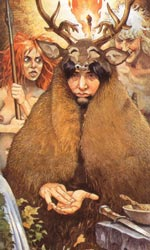

Домну, в міфології ірландських кельтів - фоморская богиня, матір Індеха, царя фоморов. Зазвичай зображувалася увінчаною оленячими або цапиними рогами, і в шкурах жертовних тварин. Її син Індех був убитий в другій битві при Мойтуре (Маг Туіред), а військо фоморов розгромлено. Вважається, що більшість демонів-фоморов було вигнано з Ірландії, а частина демонічних істот, в тому числі і богиня Домну безповоротно стали жителями підземного і підводного світу.
Відомо, що кельти, що вторглися на територію Ірландії, дуже боялися тих магічних ритуалів, які практикували іберійці-тубільці в своїх добре укріплених святилищах на пагорбах або важкодоступних острівцях посеред болотистих трясовини.
Племена і клани иберийцев вважалися якимось чином пов'язаними з горезвісними фоморами. Подібно до того, як найбільш велике іберійське плем'я називало себе «люди Домну», фомори називалися «богами Домну», а один з них царів, Індех, - «сином богині Домну».
Кельти і гели, що почитали себе дітьми світла, цуралися цих похмурих иберийцев, «дітей темряви». Та й самі назви їх племен нерідко давали для цього всі підстави. Так, існували племена Кірка Оідкі («Люди темряви») і Кірка Дуібхні («Люди ночі»). Землі одного з племен західної Ірландії, так званих Хі Дорхаіді («Сини мороку»), іменувалися «країною ночі».
Кельти, що принесли з собою в Ірландію своїх власних богів, відмовлялися вірити, що навіть клан богів, Туатха Де Данаан, міг без бою відібрати землі у настільки досвідчених чаклунів і волхвів, як іберійці.
Таким чином, що здійснюються в вічності битва між богами - дітьми Дану і гігантами, синами Домну, служить свого роду перенесеним в потойбічний світ відображенням пам'яті про реальних зіткненнях і битвах між інтервентами кельтами і аборигенами іберійцями.